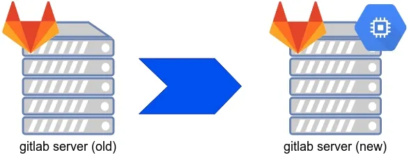

بنا به دلایلی ممکن است که مجبور به انتقال و مهاجرت سرویس gitlab از سرور جاری و در حال کار به سروری جدید
شوید. در این پروسه ممکن با مشکلاتی از قبیل عدم تطابق نسخ، تفاوت سیستم عامل ها و غیره مواجه شوید؛ بنابراین
توصیه می شود تا سرویس گیت را مبنی بر docker پیاده سازی کنید تا کمترین وابستگی ممکن را داشته باشید.

دقت داشته باشید که برای مهاجرت سرویس گیت، هر نسخه ای که درحال حاضر اجرا می باشد، باید همان هم در مقصد
اجرا شده باشد. برای آپدیت گیت به نسخه های بالاتر، پروسه ای جداگانه باید طی شود که در مطلب به نام
آپدیت گیت لب از 13.11.3 به آخرین نسخه
به آن اشاره شده است. در این نوشته ما نیز بر مبنی docker کار را جلو می بریم.
پیش فرض ها
سرویس گیت بافایل داکر کامپوز زیر اجرا می باشد:
ersion: "3"
services:
gitlab:
container_name: gitlab
image: gitlab/gitlab-ce:15.11.3-ce.0
hostname: 'code1.domain.com'
ports:
- 80:80
- 22:22
environment:
GITLAB_ROOT_PASSWORD: "password"
GITLAB_OMNIBUS_CONFIG: |
external_url "http://code1.domain.com"
volumes:
- ./config:/etc/gitlab
- ./logs:/var/log/gitlab
- ./data:/var/opt/gitlab
دقت شود تا در سرور مقصد نیز سرویس گیت با همین داکر کامپوز و نسخه گیت راه اندازی شود.
ابتدا سرور جدید را آماده کرده و فایل داکر کامپوز فوق را روی آن اجرا کرده تا سرویس گیت با همان نسخه سرور قبلی راه اندازی شود.
مراحل انتقال
برای انتقال ابتدا باید کاری کرد که داده جدیدی به سرویس وارد نشود.
گام اول - انتقال تنظیمات
بعد از راه اندازی سرویس گیت در سرور جدید، ابتدا فایل های تنظیمات را از سروی قدیم به سرور جدید و در مسیر همسان سرور قدیم جایگزاری می کنیم.
/etc/gitlab/gitlab.rb
/etc/gitlab/gitlab-secrets.json
/etc/gitlab/ssl
مرحله بعد بکاپ گرفتن از سرور قبلی است:
sudo gitlab-rake gitlab:backup:create
فایل بکاپ را از سرور قبلی به سرور جدید و مسیر زیر انتقال داده:
/var/opt/gitlab/backups/XXXXXXXXXX_gitlab_backup.tar
گام دوم - ورود اطلاعات
بعد از انتقال اطلاعات سرور قبلی، طی مراحل زیر اطلاعات را در سرور جدید وارد می کنیم. بعد از انتقال فایل های تنظیمات، دستور زیر باید اجرا شود:
gitlab-ctl reconfigure
سپس سرویس های مربوط به گیت باید غیر فعال شوند:
gitlab-ctl stop unicorn
gitlab-ctl stop puma
gitlab-ctl stop sidekiq
مرحله بعدی بازگرداندن فایل بکاپ است، برای این کار ابتدا باید دسترسی فایل بکاپ را تغییر داد و سپس دستورات ایمپورت را اجرا نمود:
chown git:git /var/opt/gitlab/backups/XXXXXXXXXX_gitlab_backup.tar
gitlab-rake gitlab:backup:restore BACKUP=XXXXXXXXX
و در پایان دستورات زیر را اجرا می کنیم:
gitlab-ctl start
gitlab-rake gitlab:check SANITIZE=true
اکنون سرویس گیت در محل جدید راه اندازی و قابل استفاده می باشد.